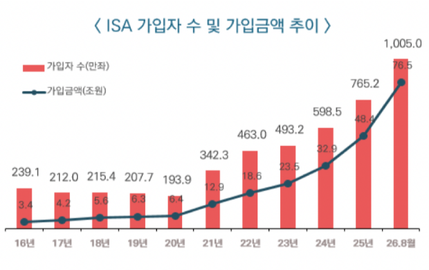
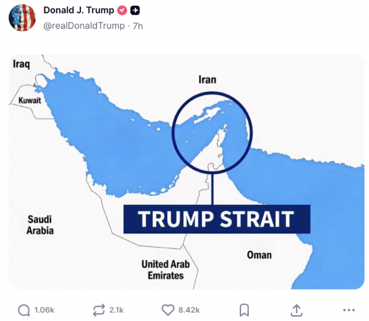

9/27(일) · 기준 2026-09-26 22:00 ~ 2026-09-27 06:00
엑셀 다운로드
"이미지 다운로드"를 누르거나, 이미지를 길게 눌러 저장한 뒤 카톡으로 보내세요.


![[연합뉴스] 2026 아이치·나고야 아시안게임 국가별 메달 현황 (26일)](images/graphics/연합뉴스_01.jpg)
![[연합뉴스] 2026 아이치·나고야 아시안게임 메달리스트 (26일)](images/graphics/연합뉴스_02.jpg)
![[연합뉴스] 미국-중국 정상회담 주요 내용](images/graphics/연합뉴스_03.jpg)
![[뉴시스] 금리인상에도 집값 상승 기대 여전…전망CSI 125](images/graphics/뉴시스_04.jpg)
![[뉴스1] [그래픽] 2026 아이치·나고야 아시안 게임 펜싱 남자 사브르 단체전 금메달-오상욱·박상원·도경동·황희근](images/graphics/뉴스1_05.jpg)
![[뉴스1] [오늘의 그래픽] 추석연휴 낮시간 전기차 충전 반값…자가충전은 0원](images/graphics/뉴스1_06.jpg)


![온체인 금융, 시장 열린 뒤 준비하면 늦는다[기고]](images/article_07.png)